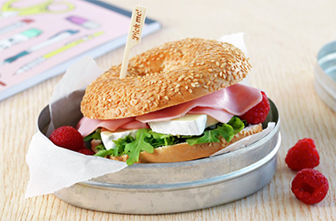
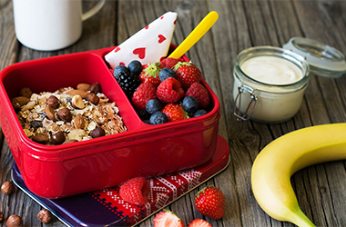
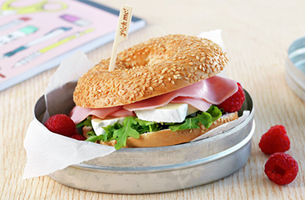
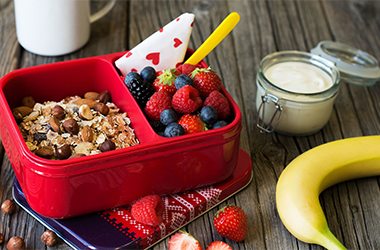

Her finner du gode og enkle måltid du kan ha som lunsj,
både i matpakken og hjemme.
Oppskriftene kommer fra kjente og populære kilder
som MENY, matprat og mange fler.
Utvalget som vises er våre favoritter!
PITABRØD MED KJØTTKAKE
BAGEL MED BRIE OG SKINKE
MATPAKKENE BARNA KAN LAGE SELV
- ALT DU TRENGER I MATPAKKEN
 


